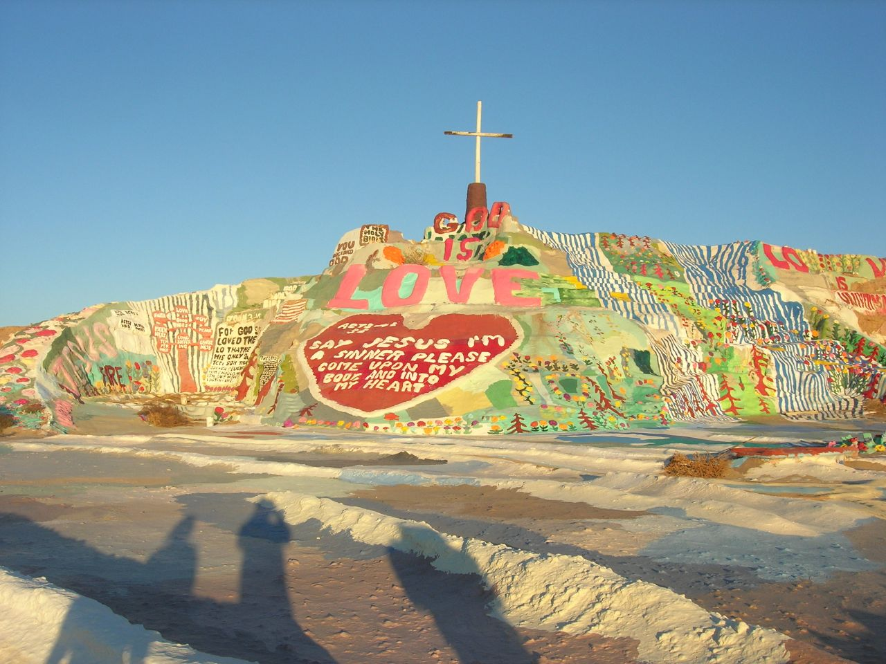

Discover Hidden Gems and Secret Treasures
Joshua Tree National Park

Escape to the otherworldly landscapes of Joshua Tree National Park. Explore its unique Joshua trees, hike through rugged rock formations, and stargaze under the clear desert skies. This hidden gem offers solitude and a chance to connect with nature.
Learn MoreBig Sur

Embark on a scenic coastal drive along California's Big Sur. Marvel at the breathtaking views of dramatic cliffs, pristine beaches, and turquoise waters. Discover hidden coves, hike through redwood forests, and experience the serenity of this coastal paradise.
Learn MoreChannel Islands National Park

Explore the remote beauty of Channel Islands National Park. Take a boat or kayak to the islands and discover untouched landscapes, diverse marine life, and unique flora and fauna. This hidden treasure offers hiking, camping, and incredible opportunities for wildlife encounters.
Learn MoreSalvation Mountain
Experience the vibrant and unconventional art of Salvation Mountain. Located near the Salton Sea, this colorful, hand-painted mountain is a testament to one man's artistic vision. Explore the intricate details and inspiring messages that cover this whimsical landmark.
Learn More